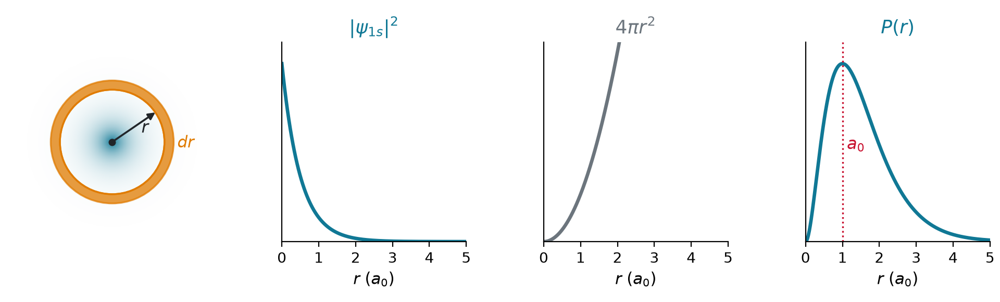
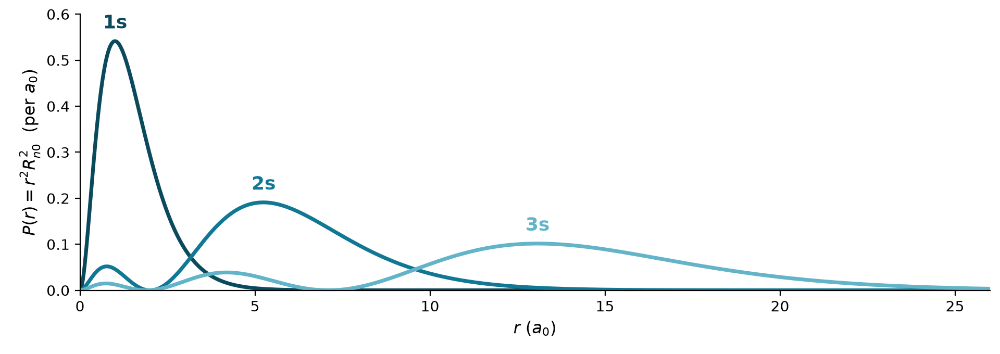
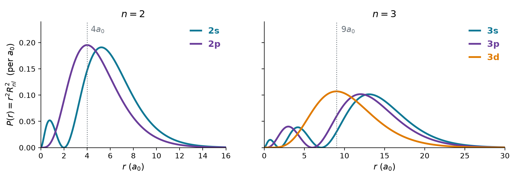
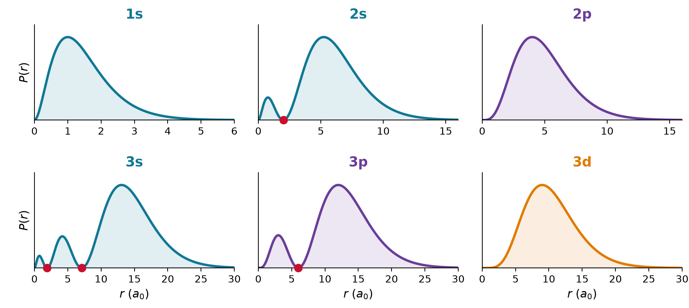
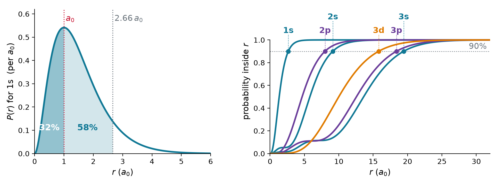
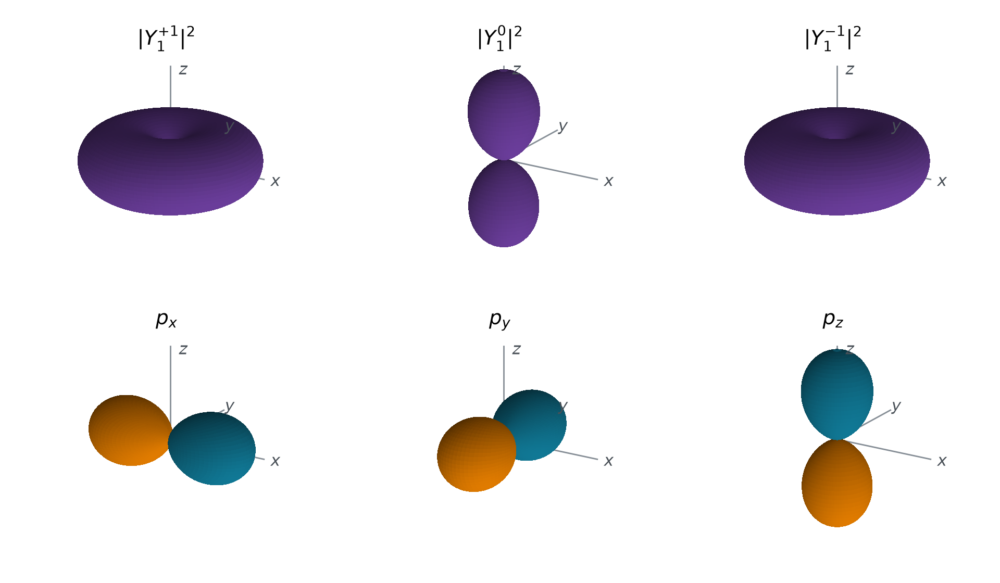
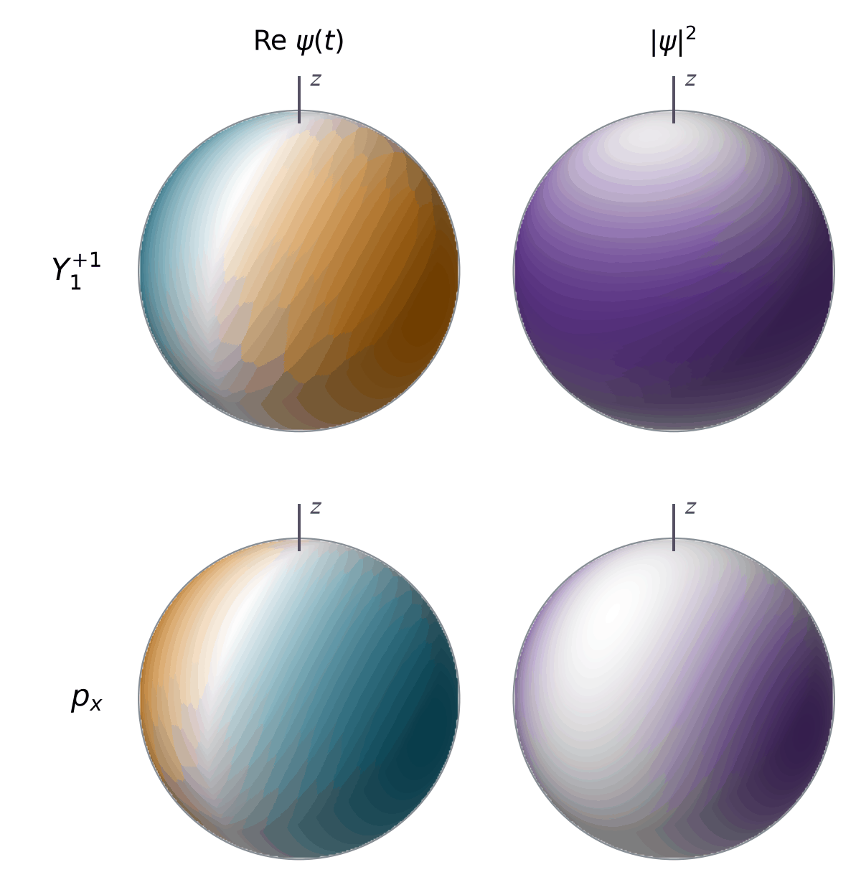
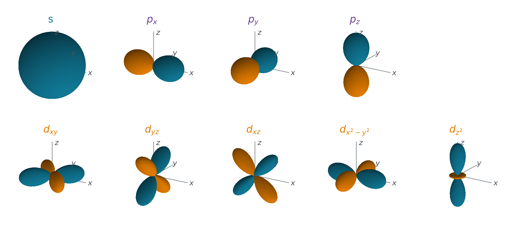
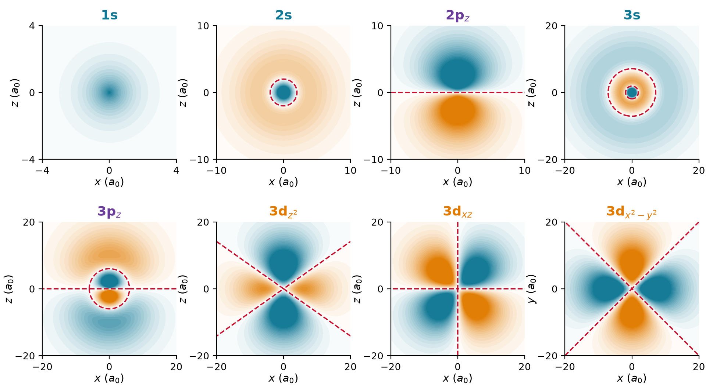

Chem 3240 · Lecture 5.2
\psi_{nlm} = R_{nl}(r)\,Y_l^m(\theta, \phi), \qquad n = 1, 2, \dots \qquad l < n \qquad \lvert m\rvert \leq l
| n | l | orbitals | how many | energy |
|---|---|---|---|---|
| 1 | 0 | 1s | 1 | -E_h/2 |
| 2 | 0, 1 | 2s, 2p | 1 + 3 = 4 | -E_h/8 |
| 3 | 0, 1, 2 | 3s, 3p, 3d | 1 + 3 + 5 = 9 | -E_h/18 |
\lvert\psi_{nlm}\rvert^2\,dV = \underbrace{R_{nl}^2(r)\,r^2\,dr}_{\text{distance}}\;\times\;\underbrace{\lvert Y_l^m\rvert^2\,\sin\theta\,d\theta\,d\phi}_{\text{direction}}
P(r) = r^2R_{nl}^2(r), \quad \int_0^\infty P\,dr = 1 \qquad\qquad \lvert Y_l^m\rvert^2, \quad \int\lvert Y_l^m\rvert^2\,d\Omega = 1

Where is P(r) = 4r^2e^{-2r} largest (r in a_0)?
\frac{dP}{dr} = 8r\,e^{-2r} - 8r^2e^{-2r} = 8r\,(1 - r)\,e^{-2r} = 0 \quad\Longrightarrow\quad r_{\mathrm{mp}} = a_0
How often is the 1s electron closer than a_0? What is its average distance?
P(r < x) = \int_0^x 4r^2e^{-2r}\,dr = 1 - e^{-2x}(2x^2 + 2x + 1)
P(r < a_0) = 1 - 5e^{-2} = 0.32, \qquad\qquad P(r < 2.66\,a_0) = 0.90
\langle r\rangle = 4\int_0^\infty r^3e^{-2r}\,dr = 4\cdot\frac{3!}{2^4} = \frac{3}{2}\,a_0



\text{peaks of } P(r) = n - l, \qquad\qquad \text{radial nodes} = n - l - 1
| orbital | most probable r | average \langle r\rangle | 90% inside |
|---|---|---|---|
| 1s | a_0 | 1.5\,a_0 | 2.66\,a_0 |
| 2s | 5.24\,a_0 | 6\,a_0 | 9.12\,a_0 |
| 2p | 4\,a_0 | 5\,a_0 | 7.99\,a_0 |
| 3s | 13.07\,a_0 | 13.5\,a_0 | 19.44\,a_0 |
| 3p | 12\,a_0 | 12.5\,a_0 | 18.39\,a_0 |
| 3d | 9\,a_0 | 10.5\,a_0 | 15.80\,a_0 |
\langle r\rangle_{nl} = \frac{n^2a_0}{Z}\left[1 + \frac{1}{2}\left(1 - \frac{l(l+1)}{n^2}\right)\right] \qquad\qquad \text{every length} \propto \frac{n^2}{Z}

\lvert Y_1^{0}\rvert^2 = \frac{3}{4\pi}\cos^2\theta \ \text{(dumbbell along } z) \qquad\qquad \lvert Y_1^{\pm1}\rvert^2 = \frac{3}{8\pi}\sin^2\theta \ \text{(ring around } z)
\hat{H}\psi_a = E\psi_a, \ \hat{H}\psi_b = E\psi_b \quad\Longrightarrow\quad \hat{H}\,(c_a\psi_a + c_b\psi_b) = E\,(c_a\psi_a + c_b\psi_b)
p_z = Y_1^0 = \sqrt{\frac{3}{4\pi}}\,\frac{z}{r}
p_x = \frac{Y_1^{-1} - Y_1^{+1}}{\sqrt{2}} = \sqrt{\frac{3}{4\pi}}\,\frac{x}{r} \qquad\qquad p_y = \frac{i\,(Y_1^{-1} + Y_1^{+1})}{\sqrt{2}} = \sqrt{\frac{3}{4\pi}}\,\frac{y}{r}
From Y_1^{\pm1} = \mp\sqrt{3/8\pi}\,\sin\theta\,e^{\pm i\phi}, form (Y_1^{-1} - Y_1^{+1})/\sqrt{2}.
Y_1^{-1} - Y_1^{+1} = \sqrt{\frac{3}{8\pi}}\sin\theta\left(e^{-i\phi} + e^{+i\phi}\right) = \sqrt{\frac{3}{8\pi}}\sin\theta\,(2\cos\phi)
p_x = \frac{1}{\sqrt{2}}\cdot2\sqrt{\frac{3}{8\pi}}\sin\theta\cos\phi = \sqrt{\frac{3}{4\pi}}\sin\theta\cos\phi = \sqrt{\frac{3}{4\pi}}\,\frac{x}{r}


Y_1^{+1}e^{-iEt/\hbar} \propto \sin\theta\,e^{i(\phi - Et/\hbar)}
p_x\,e^{-iEt/\hbar} \propto \sin\theta\cos\phi\,e^{-iEt/\hbar}
| orbital | combination | angular function | lobes |
|---|---|---|---|
| d_{z^2} | Y_2^0 | \sqrt{5/16\pi}\,(3z^2 - r^2)/r^2 | two along z plus a ring |
| d_{xz} | (Y_2^{-1} - Y_2^{+1})/\sqrt{2} | \sqrt{15/4\pi}\,xz/r^2 | four, between x and z |
| d_{yz} | i\,(Y_2^{-1} + Y_2^{+1})/\sqrt{2} | \sqrt{15/4\pi}\,yz/r^2 | four, between y and z |
| d_{x^2-y^2} | (Y_2^{+2} + Y_2^{-2})/\sqrt{2} | \sqrt{15/16\pi}\,(x^2 - y^2)/r^2 | four, along x and y |
| d_{xy} | (Y_2^{+2} - Y_2^{-2})/(i\sqrt{2}) | \sqrt{15/4\pi}\,xy/r^2 | four, between x and y |

\underbrace{n - l - 1}_{\text{spheres: } R_{nl} = 0} \;+\; \underbrace{l}_{\text{planes or cones: } Y = 0} \;=\; n - 1 \ \text{nodal surfaces}

Where does each vanish, and how many surfaces is that?
3p_z:\quad R_{31} = 0 \text{ at } \rho = 6 \ \text{(a sphere)}, \qquad \cos\theta = 0 \ \text{(the plane } z = 0)
3d_{z^2}:\quad R_{32} \neq 0 \text{ for } \rho > 0, \qquad 3\cos^2\theta = 1 \text{ at } 54.7^\circ, 125.3^\circ \ \text{(two cones)}
1 + 1 = 2 \qquad\qquad\qquad 0 + 2 = 2
| picture | shows | hides |
|---|---|---|
| radial distribution P(r) | distance, radial nodes, size | the shape |
| angular surface \lvert Y\rvert^2 | shape, angular nodes | the size |
| \psi on a plane | sign, every node, size | two dimensions |
| 90% boundary surface | size and shape together | the inside, the tail |
| point cloud | the density itself | the sign, unless coloured |
An orbital is one electron’s wavefunction, R_{nl}Y_l^m. Its probability factors into a radial distribution P(r) = r^2R_{nl}^2, which peaks at Bohr’s radius for 1s and grows as n^2a_0/Z, and an angular distribution \lvert Y_l^m\rvert^2. Because the 2l + 1 states of a level are degenerate, their real combinations p_x, p_y, p_z and the five d are stationary states too, pointing along axes at the cost of a definite L_z. Every orbital has n - l - 1 spherical nodes and l planes or cones, n - 1 in all, and the textbook drawing is the surface that holds 90% of the electron.
Chem 3240 · Quantum Mechanics